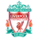
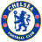

L
İ
V
E
R
P
O
O
L
Liverpool Tarihçesi
Liverpool kulübü, John Houlding ile Everton arasında yaşanan ihtilafın bir sonucu olarak kurulmuştur. 8 yılın ardırdan Everton kulübü, 1892 yılında Goodison Park'a taşınmış ve buna takriben Houlding, Liverpool kulübünün temellerini atmıştır. İlk başta "Everton FC Athletic Grounds Ltd.
KADRO
- Alisson Ramses Becker 
- Virgil van Dijk
- Ibrahima Konate
- Andrew Robertson
- Trent Alexander-Arnold
- Fabinho
- Thiago Alcantara
- Jordan Henderson
- Mohamed Salah
- Luis Diaz
- Roberto Firmino
C
H
E
L
S
E
A
Chelsea Tarihçesi
Liverpool kulübü, John Houlding ile Everton arasında yaşanan ihtilafın bir sonucu olarak kurulmuştur. 8 yılın ardırdan Everton kulübü, 1892 yılında Goodison Park'a taşınmış ve buna takriben Houlding, Liverpool kulübünün temellerini atmıştır. İlk başta "Everton FC Athletic Grounds Ltd.
- Edouard Mendy 
- Thiago Silva
- Kalidou Koulibaly
- Ben Chilwell
- Reece James
- N'Golo Kante
- Mason Mount
- Conor Gallagher
- Hakim Ziyech
- Raheem Sterling
- Emerick Aubameyang
KADRO
A
R
S
E
N
A
L
arsenal Tarihçesi
Liverpool kulübü, John Houlding ile Everton arasında yaşanan ihtilafın bir sonucu olarak kurulmuştur. 8 yılın ardırdan Everton kulübü, 1892 yılında Goodison Park'a taşınmış ve buna takriben Houlding, Liverpool kulübünün temellerini atmıştır. İlk başta "Everton FC Athletic Grounds Ltd.
- Edouard Mendy
- Thiago Silva
- Kalidou Koulibaly
- Ben Chilwell
- Reece James
- N'Golo Kante
- Mason Mount
- Conor Gallagher
- Hakim Ziyech
- Raheem Sterling
- Emerick Aubameyang